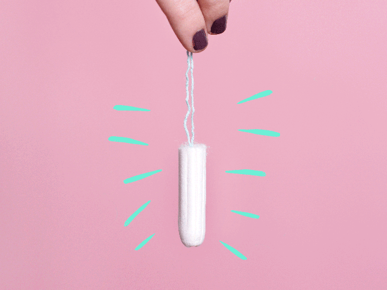
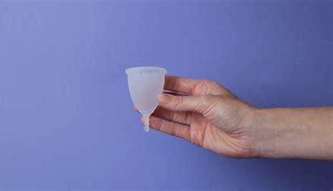
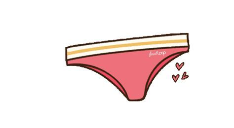
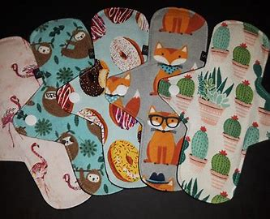
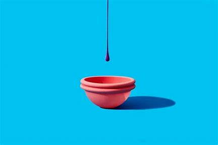

Services
Menstrual Products
Choosing a menstrual product depends on personal comfort, lifestyle, and environmental concerns. It's essential to follow proper hygiene practices and change products as recommended to avoid health issues.
Certainly! Here's a brief overview of common menstrual products:
Pads
- Description: Absorbent pads worn externally in underwear.
- Types: Regular, overnight, ultra-thin, and organic.
- Usage: Stick to underwear, and should be changed regularly.

Tampons
- Description: Inserted into the vagina to absorb menstrual blood.
- Types: Regular, super, and applicator or non-applicator.
- Usage:Changed every few hours, should not be left in for too long.

Menstrual Cups
- Description: Reusable silicone or rubber cups worn internally to collect menstrual blood.
- Usage:Inserted like a tampon, emptied every 4-12 hours, and can last for years.

Period Panties
- Description:Underwear with built-in absorbent layers.
- Usage: Can be used alone or as backup with other products.

Reusable Cloth Pads
- Description: Cloth pads with absorbent layers, washable and reusable.
- Usage: Similar to disposable pads, but washed and reused.

Disposable Menstrual Discs
- Description: Disc-shaped devices worn internally to collect menstrual blood.
- Usage: Can be worn for up to 12 hours.